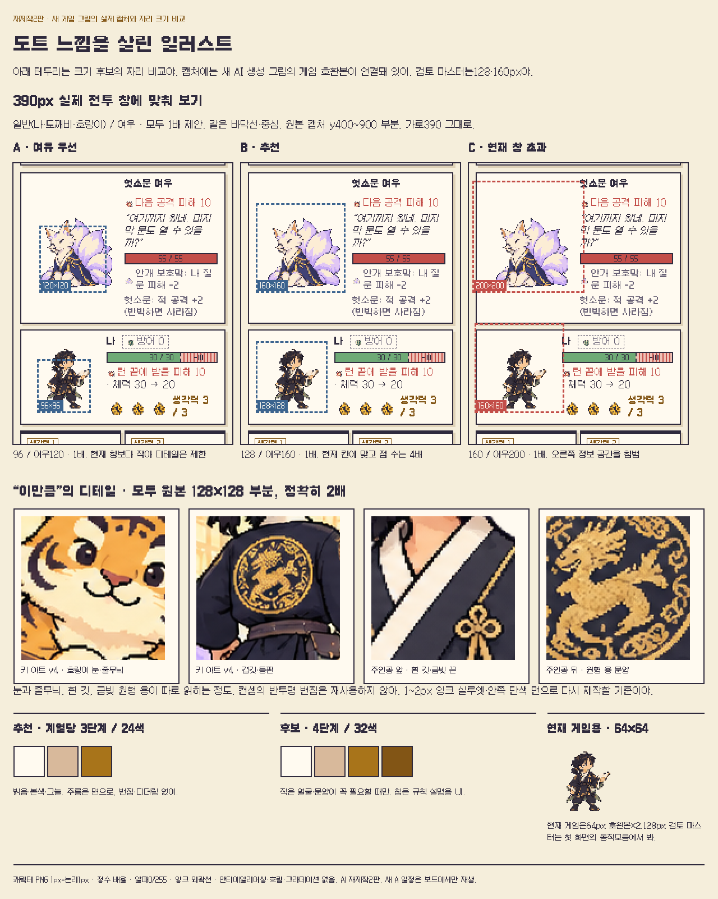

01~18 장면과 그림 자리
번호는 대장의 자리 번호야. 실선은 지금 쓰는 그림, 회색 점선은 없는 그림의 제안 자리야. 번호나 목록을 누르면 같은 ID가 강조돼.
PC 뷰포트 1280×800, 모바일 390×844(세로 전체 캡처). 축소된 캡처는 위치 안내용이고 원본 링크로 실제 크기를 볼 수 있어. 본문 위에 배경 그림을 넣지 않아.
도트 느낌을 살린 일러스트
추천은 일반 128×128·여우 160×160, 표시 1배, 계열당 3단계·24색 이하야. 현재 보이는 크기를 지키면서 디테일을 담을 픽셀을 늘려.

비교를 원래 크기로 열기 · 근거·음영·알파 기준. 마스터는 일반128·여우160px이고, 현행 게임은 같은 화면 크기를 유지하도록64·80px 호환본을2배로 보여 줘.
규칙 + 불규칙, 작은 움직임
새로 만든 눈·고개·귀·옷자락 그림으로 규칙·불규칙·사건 우선순위를 시연해. 이 일정은 검토 보드 전용이고 게임의 일정 코드는 아직 연결하지 않았어.
설정은 이 보드에서만 적용돼. OS 움직임 줄이기가 켜지면 수동 설정보다 먼저 전부 정지해. 숨은 탭도 정지하고, 사건 포즈 중에는 불규칙 예약을 취소해.
최근 동작·간격 검사 기록
모든 그림 한눈에 · 프레임별
시트는 각 셀을 정확히 2배로 잘라 보여 줘. 초안은 현재 게임에도 쓰이는 그림이고, 회색 상자는 앞으로 그릴 후보야. 안 쓰는 그림과 참조 원본도 따로 표시했어.